İstanbul merkezli hukuk bürosu
Dava takibi, danışmanlık ve uyuşmazlık yönetiminde kurumsal yaklaşım.
Karadoğan Avukatlık Bürosu, müvekkillerine hukuki süreçlerin planlanması, yürütülmesi ve takibi aşamalarında özenli, düzenli ve dosya özelinde şekillenen hukuki hizmet sunar.
Hukuki süreçlerin her aşamasında planlı ve özenli çalışma.
Karadoğan Avukatlık Bürosu, dava ve danışmanlık süreçlerinde her dosyanın kendi koşullarını dikkate alan bir çalışma düzeni benimser. Süreçler, ilgili mevzuat, yargı uygulaması, delil durumu ve müvekkilin hukuki menfaati birlikte değerlendirilerek yürütülür.
Büro, uyuşmazlıkların çözümü ve hukuki risklerin yönetilmesi bakımından açık iletişim, düzenli takip ve somut dosya değerlendirmesi üzerine kurulu bir hizmet anlayışı ile hareket eder.
Kurumsal ve bireysel hukuki ihtiyaçlara yönelik çalışma alanları.
İstanbul Beyoğlu’nda konumlanan hukuk bürosu.
Karadoğan Avukatlık Bürosu, İstanbul Beyoğlu’nda, yerli ve yabancı müvekkillere dava takibi ve hukuki danışmanlık alanlarında hizmet vermektedir. Büro çalışmaları, hukuki değerlendirmenin yanında süreç yönetimi, belge düzeni ve iletişim sürekliliği esas alınarak yürütülür.
Hakkımızda